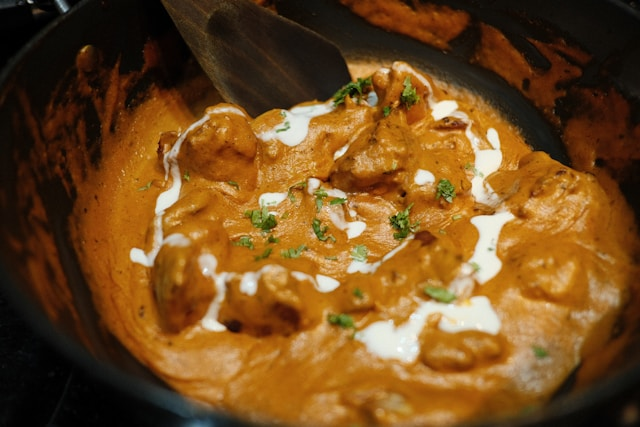

Butter Chicken

Description
Butter Chicken, also known as Murgh Makhani, is a famous Indian dish made with tender pieces of chicken cooked in a rich, creamy tomato-based sauce.
It has a smooth texture and a balanced flavor from aromatic spices, butter, and cream. It is commonly served with naan, roti, or rice.
Ingredients
For Chicken Marinade
- 500 grams chicken pieces (boneless or bone-in)
- ½ cup yogurt
- 1 tablespoon ginger-garlic paste
- 1 teaspoon red chili powder
- 1 teaspoon garam masala
- 1 tablespoon lemon juice
- Salt to taste
For Sauce
- 3 tablespoons butter
- 2 tablespoons oil
- 1 large onion, finely chopped
- 3-4 tomatoes, pureed
- 1 tablespoon ginger-garlic paste
- 1 teaspoon cumin powder
- 1 teaspoon coriander powder
- 1 teaspoon red chili powder
- 1 teaspoon garam masala
- ½ teaspoon turmeric powder
- ½ cup heavy cream
- 2 tablespoons fresh coriander, chopped
- Salt to taste
Steps to Follow
- In a bowl, mix chicken with yogurt, ginger-garlic paste, red chili powder, garam masala, lemon juice, and salt. Marinate for at least 30 minutes (or overnight for better flavor).
- Heat oil in a pan and cook the marinated chicken until it is lightly browned and almost cooked. Remove and set aside.
- In the same pan, melt butter and add chopped onions. Cook until the onions become soft and golden.
- Add ginger-garlic paste and cook for a minute until fragrant.
- Add tomato puree, cumin powder, coriander powder, red chili powder, turmeric, and salt. Cook until the sauce thickens and the oil starts separating.
- Add the cooked chicken to the sauce and simmer for 10-15 minutes until the chicken is fully cooked and absorbs the flavors.
- Stir in garam masala and heavy cream. Cook for another 2-3 minutes on low heat.
- Garnish with fresh coriander and serve hot with naan, roti, or steamed rice.
Go Back to Home Page